День Аполлонії · журнал «ДентАрт» 2023 №1
Образ Святої Аполлонії у світовому мистецтві
The image of Saint Apollonia in world art
Свята Аполлонія вважається покровителькою стоматології. Саме в день її пошанування — 9 лютого — у багатьох країнах світу відзначають Міжнародний день стоматолога, встановлений Всесвітньою організацією охорони здоров'я і Міжнародною федерацією стоматологів (FDI). У богословській літературі немає іншого персонажа, чиє життя було б настільки тісно пов'язане зі стоматологією, як життя Святої Аполлонії.
Відомо, що при народженні дівчинку назвали Діною, а ім'я Аполлонія дали їй при хрещенні. Аполлонію часто називають Александрійською, тому що вона народилася, жила і загинула в єгипетській Александрії.
Аполлонія досить рано стала черницею і присвятила себе місіонерській діяльності. У 249 році християнку-подвижницю схопили і піддали жорстоким тортурам, вимагаючи, щоб вона відреклася від віри в Ісуса Христа. Євсевій Кесарійський у «Церковній історії», де він цитує лист Святого Діонісія I Великого, патріарха Александрійського (248-265), адресований патріархові Фавію Антиохійскому, так описує її мучеництво: «Язичники схопили також Аполлонію, дивовижну бабусю-незайманку, били по щелепах, вибили всі зуби; влаштували за містом багаття і погрожували спалити її живцем, якщо вона заодно з ними не вимовить блюзнірських вигуків. Аполлонія, трохи помолившись, відійшла вбік, стрибнула з розгону у вогонь і згоріла».
Це сталося 9 лютого 249 року, а у 300-ому році Аполлонія Александрійська була канонізована християнською церквою як свята великомучениця. Після визнання її святою Аполлонія стала дуже популярною в народі.
Культ, пов'язаний зі Святою Аполлонією, відносно швидко розвинувся в Європі, зокрема і через те, що люди страждали від стоматологічних захворювань. Згідно з тодішніми християнськими уявленнями, хвороба походила від Бога, і зцілення теж мало виходити від Нього. Вважалося, що тяжкість хвороби відповідає тяжкості гріхів. Християни вірили, що варто лише вимовити ім'я цієї святої і прочитати особливу молитву, як зубний біль ущухне, а молитви, пожертви та благання перед молитовними гравюрами подарують чудесне зцілення. Незалежно від того, чи була відповідь на молитву, чи ні, прохачі часто клали срібну табличку як підношення в каплицях Святої Аполлонії, про що свідчать численні реліквії у церквах, особливо у Південній Європі, Центральній та Південній Америці.
Згідно з характером мук, яких зазнала Аполлонія, атрибутом її святості стали зуби і щипці. П'єр Фошар (1678-1761), французький лікар, якого називають батьком сучасної стоматології (він описав симптоми 103 захворювань ротової порожнини і способи їх лікування), був тією людиною, яка зробила Святу Аполлонію покровителькою дантистів. До нього Аполлонії поклонялися прості люди, вважаючи, що достатньо вимовити молитву з її ім'ям — і зуби перестануть боліти. Фошар усе життя боровся за те, щоб стоматологічну допомогу надавали тільки професійні лікарі, а не звичайні цирульники чи шарлатани. Для цього йому потрібен був символ, який міг би об'єднати лікарів і був би їхнім заступником і покровителем. І тоді він зробив цим символом Святу Аполлонію. Так що саме завдяки П'єрові Фошарові ми нині і святкуємо 9 лютого, в день Святої Аполлонії, Міжнародний день стоматолога.
Історія Святої Аполлонії викладена у всесвітньо відомій книзі «Нюрнберзька хроніка». Відомості про Аполлонію, легенди про неї можна знайти у працях Вальтера Брука «Мучеництво Святої Аполлонії та її зображення в образотворчому мистецтві» в серії «Культурна історія стоматології в індивідуальних уявленнях» (1915) та в монографії В. Балка «Свята Аполлонія» (Мюнстер, 1967). Ці роботи є результатом регіональних іконографічних досліджень, які обмежувалися Західною Європою. Про Аполлонію і ще про триста святих католицької церкви написав Томас Кроуел (Thomas J. Craughwell) у книзі «Святі, які з нами» (Saints Preserved, 2001).
У багатьох церквах та костелах можна побачити зображення Святої Аполлонії у скульптурі, вітражах, фресках. Її мучеництво також було темою численних картин художників, від найпростіших народних живописців до найвідоміших майстрів. І незважаючи на те, що Діонісій називав Аполлонію літньою жінкою, вона майже повсюди зображується молодою і миловидою. Дереворити (гравюри на дереві), старовинні гравюри на металі, вівтарні зображення, олійний живопис на полотні — найрозповсюдженіші види мистецтва, де висвітлено образ Святої Аполлонії. Великомученицю зображають з предметами, які вказують на її муки, — це щипці, зуби…
Ікони та мініатюриМолитовні образи Святої Аполлонії
Також культ Святої Аполлонії збагатив наші знання про театр у Середньовіччі, коли були популярні п'єси про життя святих. Ці театральні вистави часто показували у заїжджих дворах.
У середині 1400-х років багатий чоловік на ім'я Етьєн Шевальє замовив часослов (церковно-богослужбову книгу, що містить щоденні молитви, молитвослов) у Жана Фуке, одного з найвизначніших художників Європи ХV століття, на рубежі пізньоготичної доби та раннього Ренесансу. Фуке розміщував крихітні малюнки релігійних сцен унизу кожної сторінки часослова, і на одному з них зображено авдиторію, яка спостерігає за акторами, котрі розігрують мучеництво Святої Аполлонії.
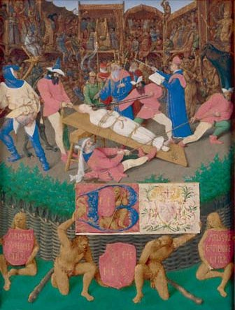
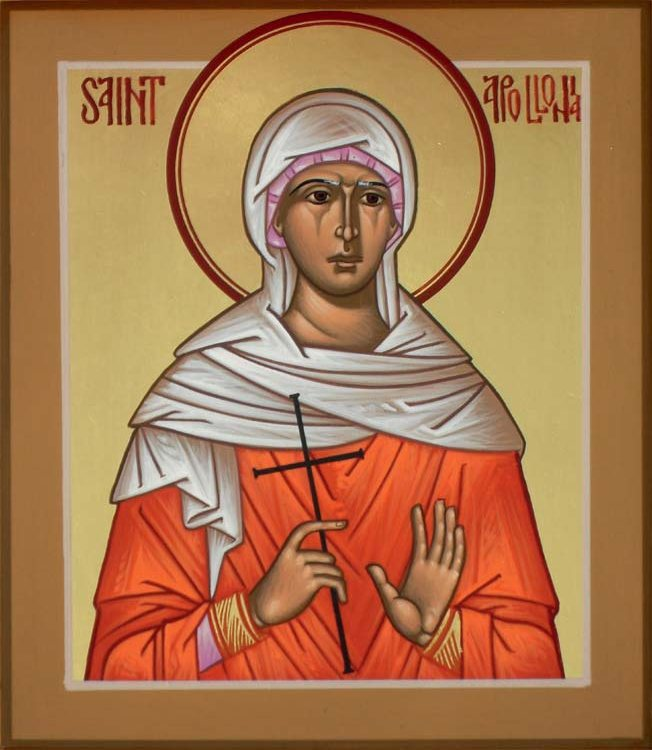
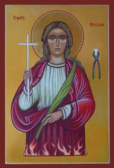
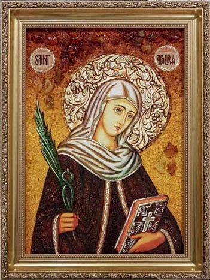
Муки Святої Аполлонії, покровительки стоматологів. Барвиста мініатюра з рукописної середньовічної книги «Часослов Етьєна Шевальє»; автор Жан Фуке. Середина XV ст. Музей Конде, Шантільї, Франція. Аполлонія Александрійська — янтарна ікона. Ікона Святої Аполлонії, виготовлена на приватне замовлення. Ікона Святої Аполлонії.
Фрески, вітражіУ стінах храмів
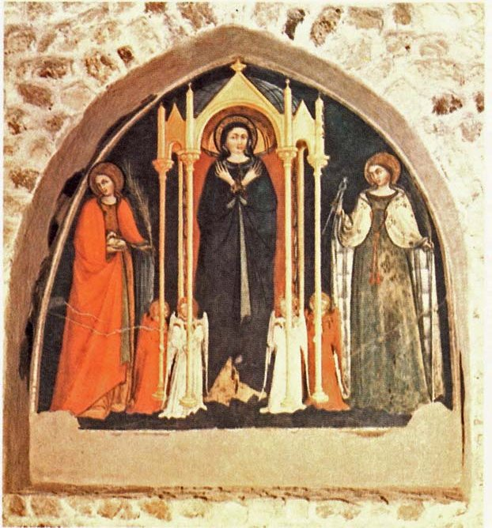
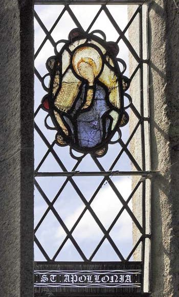
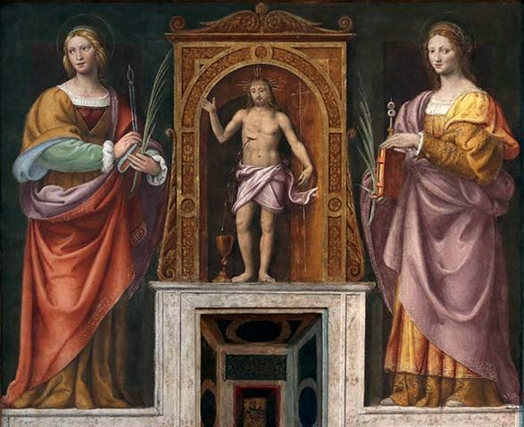
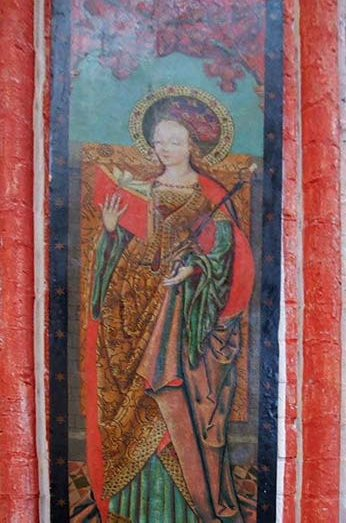
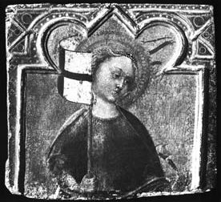
Свята Аполлонія. Фреска. Церква Св. Миколая. Штральзунд, Німеччина. Свята Аполлонія. Фреска XVI ст. Церква Санта-Марія-ді-Коллемаджо (Л'Аквіла). Абруццо, Італія. Бернардіно Луїні. Свята Лючія і Свята Аполлонія. 1481-1532 р. р. Церква Сан-Мауріціо у монастирі Маджоре. Мілан, Італія. Свята Аполлонія. Фреска XVI ст. Casa Horne. Флоренція, Італія. Вітраж у церкві в Кінгскерсуелі, Велика Британія.
ГравюриДереворити й гравюри на металі
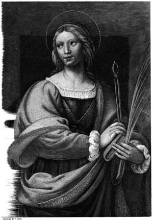
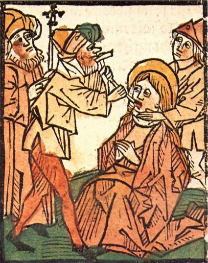
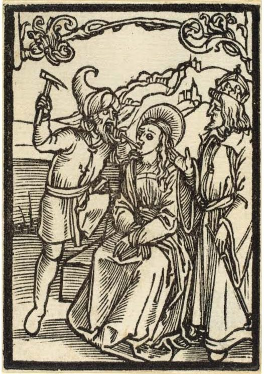
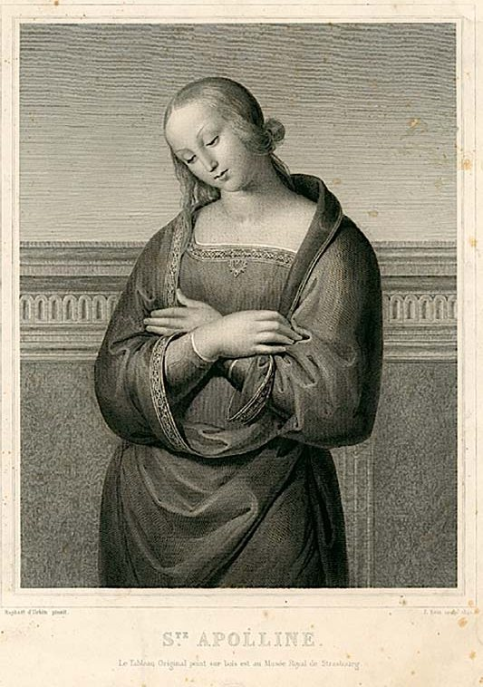
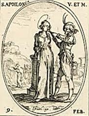
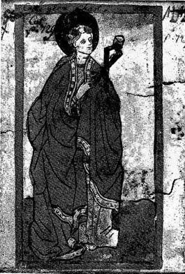
Свята Аполлонія. Кольорова гравюра на дереві із «Золотої легенди про Жака де Ворагіна», яку надрукував у 1488 р. Антон Зорг в Авґсбурзі, Німеччина. Свята Аполлонія. Кольорова гравюра на дереві з ілюстрованого рукопису третьої чверті XV ст.: 14,3 × 10,5 см. Баварська державна бібліотека. Мюнхен, Німеччина. Жан Бейн. Свята Аполлонія. 1842 р. Гравюра на сталі. Національна галерея мистецтв. Округ Колумбія, Вашингтон, США. Жак Калло. Свята Аполлонія. Гравюра. 1592-1635 р. р. Альбрехт Дюрер. Свята Аполлонія. Гравюра на дереві. Близько 1500 р. Національна галерея мистецтв. Округ Колумбія, Вашингтон, США. Свята Аполлонія, вигравіювана Тімоті Коулом на картині Бернардіно Луїні в церкві Сан-Мауріціо (фрагмент). 1892 р. Мілан, Італія.
Живопис, графікаВід народних майстрів до великих імен
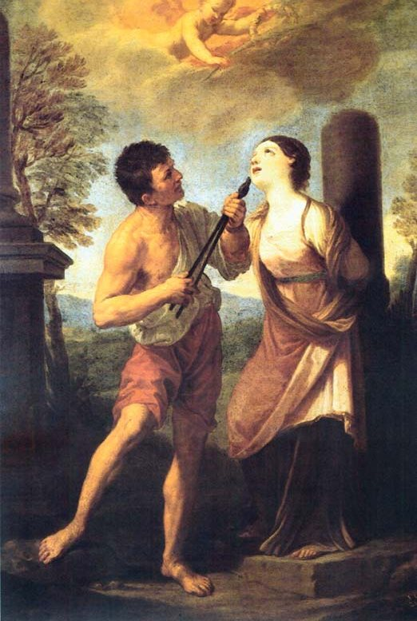
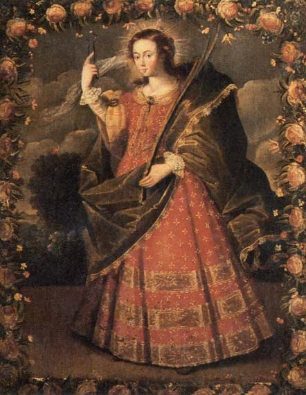
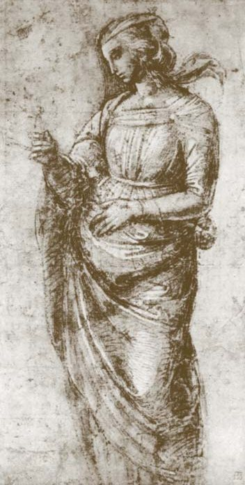
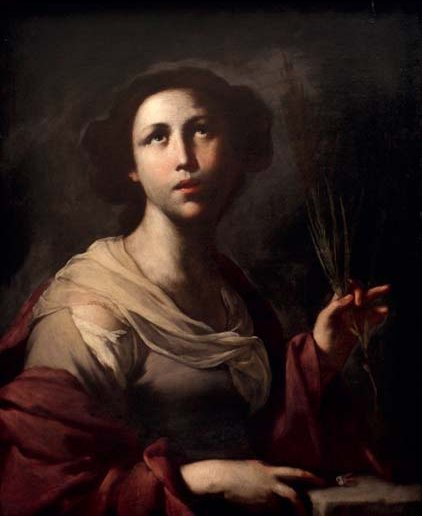
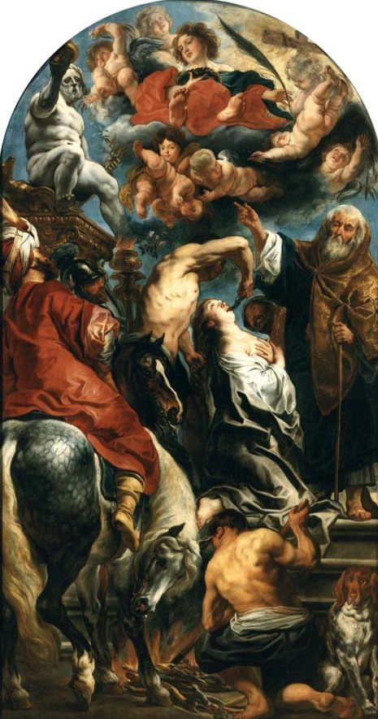
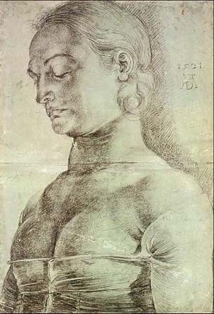
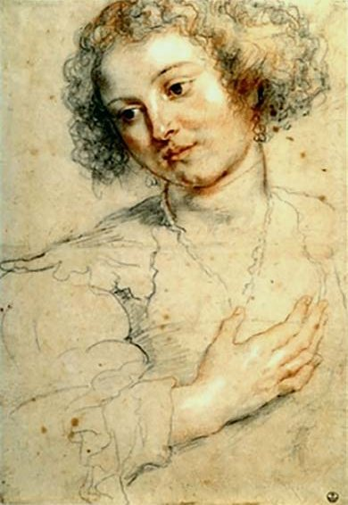
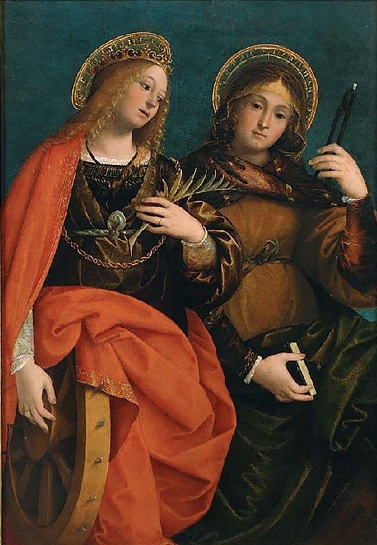
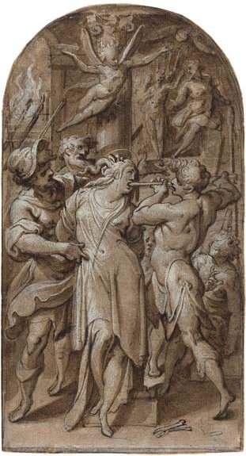
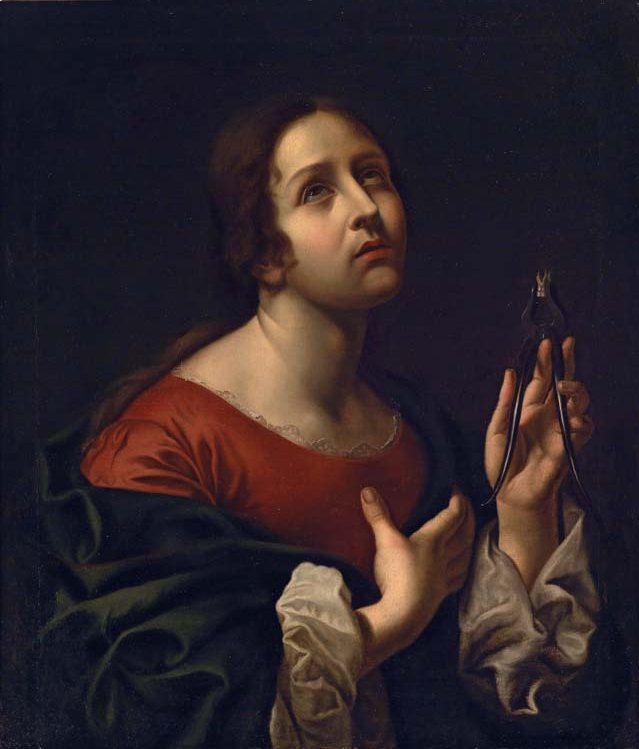
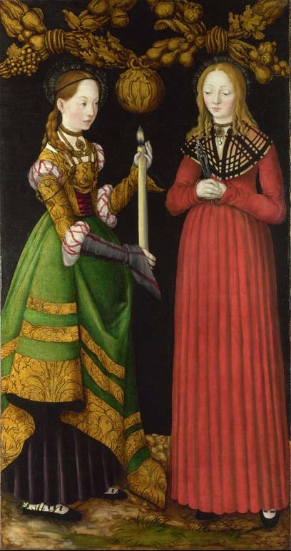
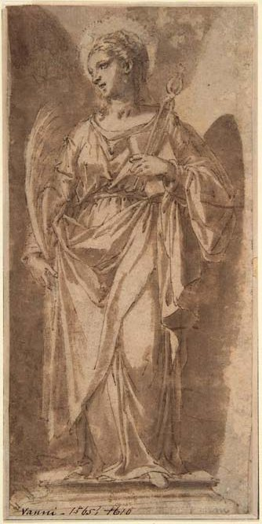
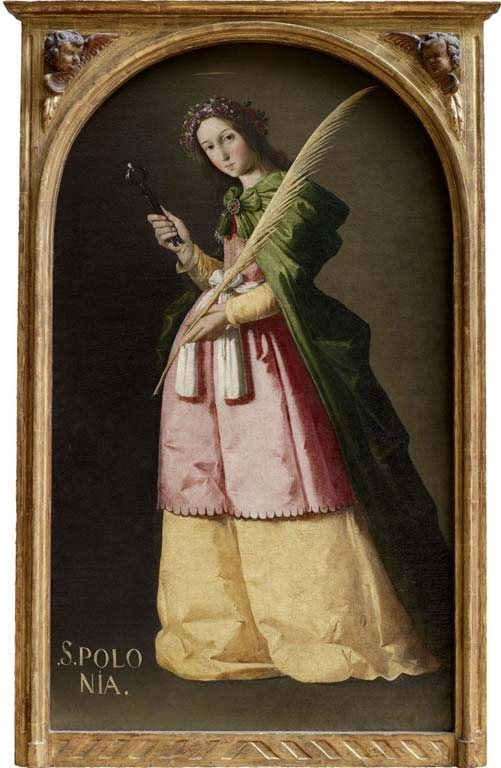
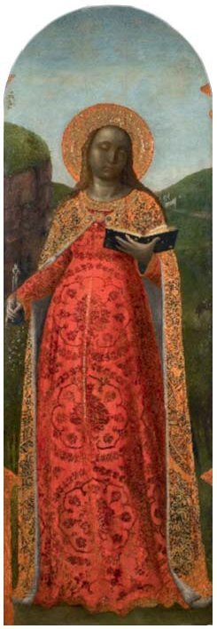
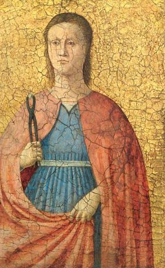
Аполлонія, одягнена в чарівне вбрання. Стоїть у пейзажі, обрамленому трояндами, які здалеку мають кумедну схожість із корінними зубами. Невідомий американський художник XVIII століття. Національний музей образотворчих мистецтв. Сантьяго, Чилі. Репродукція з картини Гвідо Рені «Муки Святої Аполлонії». Близько 1600 р. Приватна колекція. Массімо Станціоне. Свята Аполлонія. 1620-1656 р. р. Pinacoteca Metropolitana «Corrado Giaquinto». Барі, Італія. Рафаель. Свята Аполлонія. 1501-1502 р. р. Лувр. Париж, Франція. Пітер Пауль Рубенс. Ескіз голови Святої Аполлонії. 1577-1640 р. р. Галерея Уффіці, відділ малюнків та гравюр. Флоренція, Італія. Якоб Йорданс. Муки Святої Аполлонії. 1628 р. Королівський музей образотворчих мистецтв. Антверпен, Бельгія. Альбрехт Дюрер. Свята Аполлонія Александрійська. 1521 р. Берлінський гравюрний кабінет. Берлін, Німеччина. Гауденціо Феррарі. Свята Катерина Александрійська і Свята Аполлонія. Перша чверть XVI століття, до 1519 р. Громадський музей стародавнього мистецтва. Палаццо Мадама. Турин, Італія. Якопо Цуккі. Муки Святої Аполлонії. 1541-1590 р. р. Національна галерея мистецтв. Колекція Джуліуса С. Хельда. Вашингтон, США. Карло Дольчі, Флоренція. Свята Аполлонія Александрійська. 1660-ті роки. Музей Девіс, штат Массачусетс, США. Свята Аполлонія Александрійська. Анонім. XVII століття. Музей мистецтва Метрополітен. Нью-Йорк, США. Лукас Кранах Старший. Святі Женев'єва і Аполлонія. Свята Женев'єва Паризька тримає свічку, яку вона чудом знову запалила. На брошці біля її шиї знаки альфа та омега. На брошці Святої Аполлонії Александрійської зображені щипці: її катували, вириваючи зуби. Ця картина і «Святі Христина та Оттилія» були зовнішніми сторонами віконниць «Вівтаря Святої Катерини» в Дрездені, Німеччина. П'єро делла Франческа. Свята Аполлонія. Близько 1470 р. Національна галерея мистецтв. Колекція Семюеля Х. Кресса. Вашингтон, США. Франсіско де Сурбаран. Свята Аполлонія. 1636 р. Музей Лувр, Франція. Вінченцо Фоппа. Свята Аполлонія. 1490-1495 р. р. Фонд музею Брешія. Італія.
Ювелірні виробиМедалі, релікварії, обереги
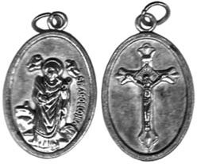
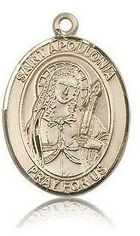
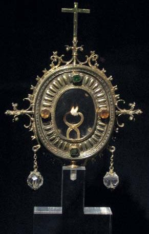
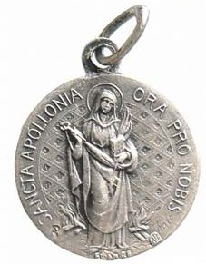
Медаль Святої Аполлонії — золото 14 карат — середня, з можливістю гравіювання. Релікварій із зубом, ймовірно, Святої Аполлонії. Собор Порту, Португалія. Вінтажна срібна релігійна підвіска-оберег із зображенням Святої Аполлонії. Вінтаж. Свята Аполлонія. Релігійна медаль.
Скульптури, вівтарні зображенняУ дереві, алебастрі й камені
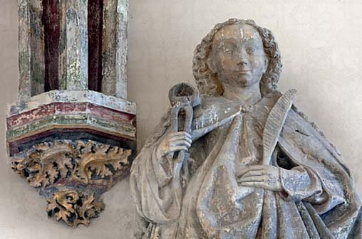
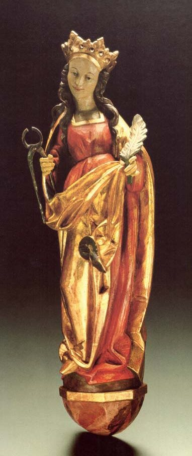
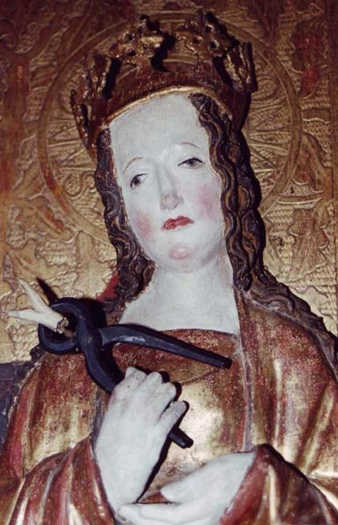
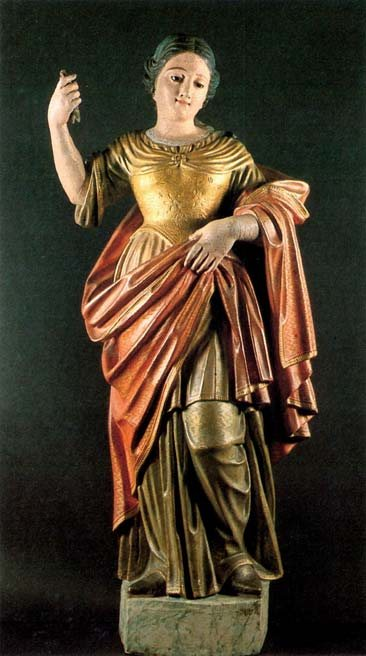
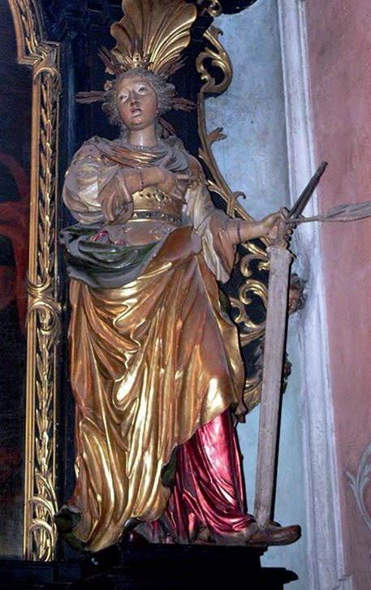
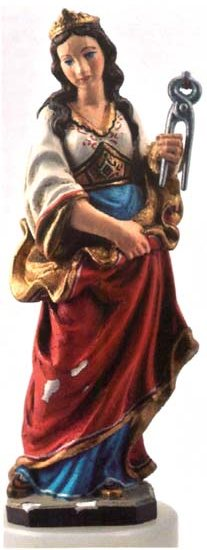
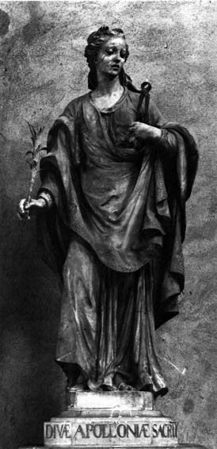
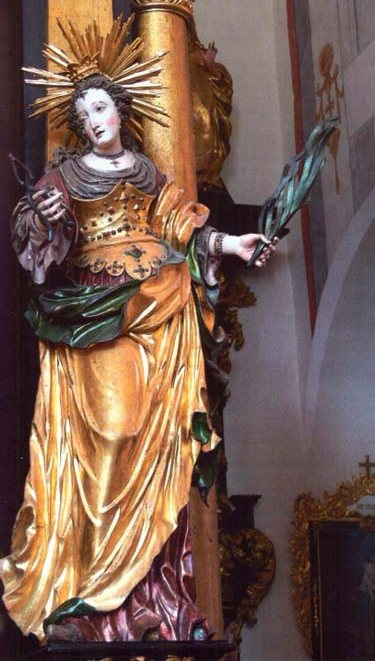
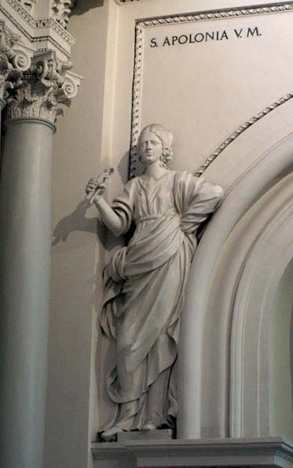
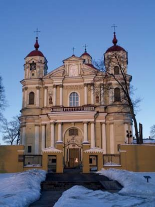
Вівтар Святої Аполлонії в стилі пізньої готики в Россау, Саксонія. Свята Аполлонія. Статуя з дерева. XVIІI ст. Висота 80 см. Культурно-історична колекція Федеральної асоціації стоматологів Німеччини. Кельн. Статуя Святої Аполлонії. Декор у Святій каплиці XV ст. Замок Шато-де-Шатоден, Ер-і-Луар, Франція. Свята Аполлонія Португальська. Статуя з дерева. XVIII ст. Висота 42 см. Федеральна асоціація стоматологів Німеччини. Кельн. Йоганн Вільгельм Гронінгер. Свята Аполлонія. Алебастрова статуя. 1700-1710 р. р. Висота 168 см. Собор Святого Павла. Мюнстер, Німеччина. Свята Аполлонія. Дерево. Приватна колекція. Свята Аполлонія. Вівтар Св. Анни у парафіяльній церкві Св. Вольфганга на озері Вольфгангзеї. Австрія. Франц Кох. Скульптура Святої Аполлонії. Вівтар Святої Анни (1942 р.). Парафіяльна церква Святого Михаїла у Мондзеї, Австрія. Свята Аполлонія. Костел Св. Петра і Павла. Вільнюс, Литва.
ІлюстраціїМініатюри рукописних книг
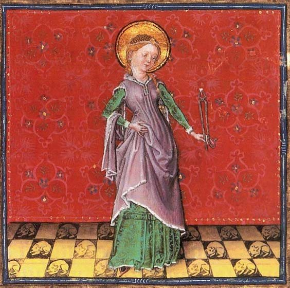
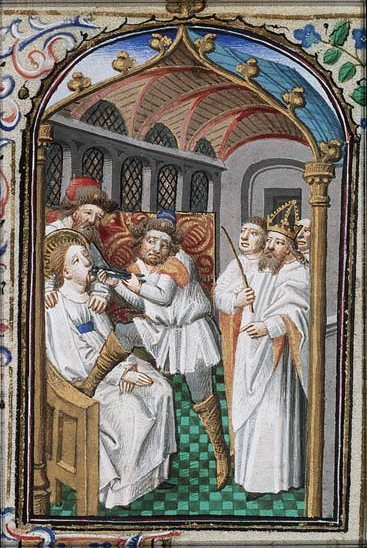
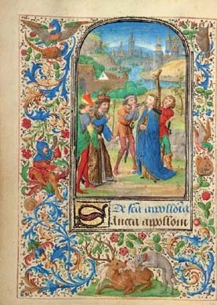
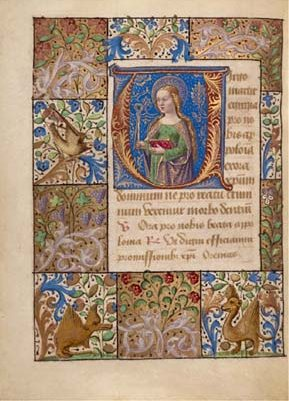
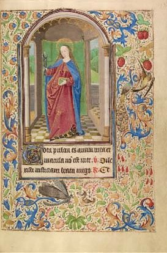
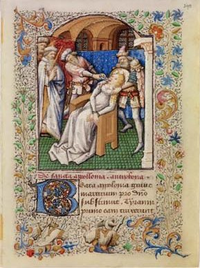
В ілюстрації XV століття з «Часослова Катерини Клевської» Святу Аполлонію зображено із зубними щипцями в руці на тротуарі з білої і чорної плитки, прикрашеної собачими головами — символом вірності. Бібліотека Пірпонта Моргана, Нью-Йорк, США. Лівен ван Латем. Мученицька смерть Святої Аполлонії. 1469 р. Музей Дж. Пола Гетті, Лос-Анджелес, США. Свята Аполлонія з книгою і щипцями. Магістр Жак Люксембурзький. 1466-1470 р. р. Музей Дж. Пола Гетті, Лос-Анджелес, США. Жорж Трюбер. Свята Аполлонія. 1480-1490 р. р. Музей Дж. Пола Гетті, Лос-Анджелес, США. Мученицька смерть Cвятої Аполлонії. Мініатюра на пергаменті. Приписується майстру Дюнуа, 1443-1445 р. р. Бібліотека Честера Бітті, Дублін, Ірландія. Муки Святої Аполлонії Александрійської. Мініатюра на пергаменті з Часослова Симона де Варі. Жан Ролен II. 1455 р. Королівська бібліотека Нідерландів, Гаага, Нідерланди.
Сучасні твориВід вітража «Аполлонії» до поп-арту
Володимир Радлінський. Вітраж Святої Аполлонії. Клініка-студія «Аполлонія». Полтава, Україна. Енді Воргол. Серія із чотирьох трафаретів «Свята Аполлонія». 1984 р. Приватна колекція. Енді Воргол (Андрій Варгола), один із засновників попарту, культова постать в історії сучасного мистецтва — художник, ілюстратор, дизайнер, скульптор, письменник, видавець, продюсер, кінорежисер — народився 1928 року в Пітсбурзі (штат Пенсільванія, США) в родині емігрантів Ондрея і Юлії Варголів, греко-католиків, вихідців із лемківського села Микова, яке на той час було у складі Австро-Угорщини. Тисячі робіт художника зберігаються в музеях і приватних колекціях світу. Орден Святої Аполлонії. Почесна відзнака ГО «Асоціація стоматологів України». 2018 р. Україна.
Література
- Кац Петр. Стоматология в искусстве. Сокровища изобразительного искусства от древности до настоящего времени / Петр Кац, Анна Кац. — Москва: ООО «Издательство „Квинтэссенция"», 2015. — 215 с.
- Malvin E. Ring. Dentistry: An illustrated history / by Malvin E. Ring. — New York: Harry N. Abrams Inc., 1985. — 320 p.
- Heinz E. Lassing. L'art dentaire. Histoire — Art — Culture / Heinz E. Lassing et Rainer A. Muller. — Paris: Jacques Legrand S.A., 1989. — 219 p.
- Gert J. Schade. The History of Dentistry in 256 prints 1470-1870 / Gert J. Schade. — Amsterdam: Tuijtel, 2020. — 319 p.
- Гриновець Я. В. Втілення образу Святої Аполлонії у мистецтві / Я. В. Гриновець, В. В. Бумаценко, І. С. Гриновець, В. С. Гриновець // Клінічна стоматологія / Львівський національний медичний університет ім. Данила Галицького. — 2013. — № 3, 4. — С. 19.
- Пьер Фошар. Хирург-дантист, или Трактат о зубах / Пьер Фошар: общ. ред., вступ. ст. К. А. Пашков; пер. В. Б. Кракович. ООО «ХЕЛЕНПРО», 2018. — 480 с.: ил.
- Онлайн-джерела: collections.louvre.fr, metmuseum.org, nga.gov, lucascranach.org, getty.edu, useum.org/artwork, museopoldipezzoli.it, artsandculture.google.com, artspace.com, fineartamerica.com, en.wikipedia.org/wiki/Saint_Apollonia, traditions-monastiques.com, flickr.com, catholicsaintmedals.com, ikonniy-dvor.com, arthive.com, lookphotos.com.
Джерела
- Кац П., Кац А. Стоматология в искусстве. Сокровища изобразительного искусства от древности до настоящего времени. — Москва: Квинтэссенция, 2015. — 215 с.
- Ring M. E. Dentistry: An illustrated history. — New York: Harry N. Abrams Inc., 1985. — 320 p.
- Lassing H. E., Muller R. A. L'art dentaire. Histoire — Art — Culture. — Paris: Jacques Legrand S.A., 1989. — 219 p.
- Schade G. J. The History of Dentistry in 256 prints 1470–1870. — Amsterdam: Tuijtel, 2020. — 319 p.
- Гриновець Я. В., Бумаценко В. В., Гриновець І. С., Гриновець В. С. Втілення образу Святої Аполлонії у мистецтві // Клінічна стоматологія (ЛНМУ ім. Данила Галицького). — 2013. — № 3, 4. — С. 19.
- Фошар П. Хирург-дантист, или Трактат о зубах / пер. В. Б. Кракович. — ООО «ХЕЛЕНПРО», 2018. — 480 с.
- Онлайн-колекції музеїв та архіви: Лувр (collections.louvre.fr), Метрополітен (metmuseum.org), Національна галерея мистецтв (nga.gov), lucascranach.org, Музей Гетті (getty.edu), useum.org, Музей Польді-Пеццолі (museopoldipezzoli.it), Google Arts & Culture (artsandculture.google.com), artspace.com, fineartamerica.com, Wikipedia (Saint Apollonia) та інші.